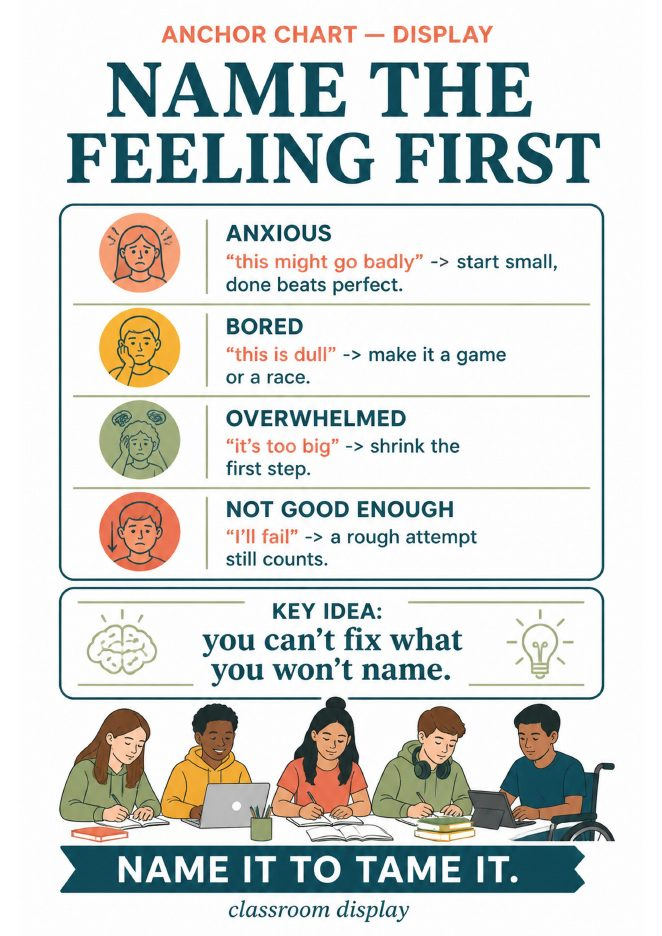
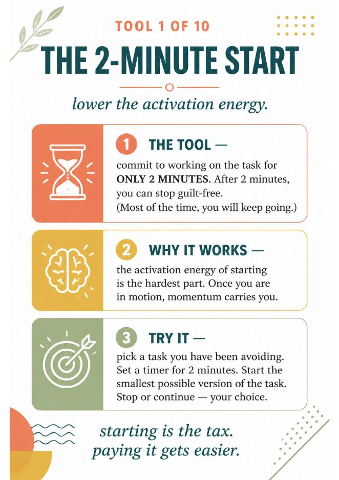
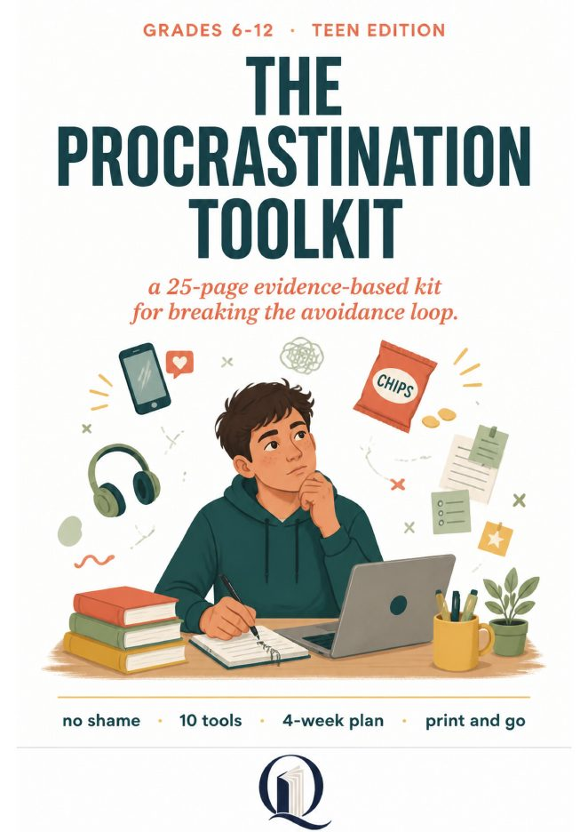

Quirepress
Quirepress
Why “just start” does not work
Every teacher has said it. Most of us have said it to ourselves at 11 p.m. with a stack of grading. It does not work because procrastination is not a time-management problem. It is an emotion-regulation problem: a task stirs up anxiety, boredom, doubt or the feeling of not being good enough, and the fastest way to make that feeling go away is to not do the task. The research base for this is solid and old enough to trust (Pychyl, Sirois and Tice have been publishing on it since the early 2000s).
Here is the part students never hear. The relief they feel when they scroll instead of starting is real, and the brain logs it as a win. So the next time the task appears, avoiding it is even more tempting. The task has also grown, because the deadline is closer, and now there is guilt on top. That is the cycle. It is five steps, and it runs itself.
The loop, in five steps
- The task appears. Something to do.
- It stirs a feeling. Anxiety, boredom, doubt, overwhelm.
- You avoid it. Scroll, snack, “later.”
- Instant relief. The feeling fades. This is the trap.
- It grows. Bigger task, plus guilt, and the loop repeats.
Students see this and something changes in the room. Nobody has ever told them that step 4 is the problem, not step 3. They thought the problem was that they were lazy. It is not a character flaw; it is a loop, and loops can be broken at a specific point.
The 20-minute lesson
This runs in an advisory block, a health class opener, or a study-hall intro. You need the infographic above on the board and one printed half-sheet per student. No slides.
Project the cycle. Read the five steps aloud. Ask: “Which step do you think is the problem?” Most say 3. Let them.
Reveal the trap. It is step 4. Relief is the bait, not the reward. Ask students to say, out loud or on paper, the last thing they avoided this week. Keep it light; nobody is in trouble.
Name the feeling. Hand out the “Name the feeling first” chart. Students pick the feeling the task gives them: anxious, bored, overwhelmed, or not good enough. Each feeling has its own counter-move printed next to it.
Choose one tiny step. Not “write the essay.” “Open the doc and type the title.” Each student writes one step so small it feels silly. Silly is the point.
The 2-minute start. Set a timer. Everyone does their tiny step for two minutes, right now, in the room. Exit ticket: “What did you avoid, what did you feel, what did you do?”
That is the whole lesson. The infographic does the teaching; you do the asking.


Free: the “Name the feeling first” anchor chart
The printed half-sheet for step three, plus a one-page version of this lesson plan. It arrives by email with the Advisory Starter Set. Get the set →
What to do the week after
One lesson names the loop. It does not change a habit. The students who need this most will be back in step 3 by Thursday, and that is normal. What works is a short run of tools, one every two or three days, each small enough to try before the bell. That is how The Procrastination Toolkit is built: ten tools, one page each, same three-part structure every time (the tool, why it works, try it now). Run four weeks of it and the exit tickets start to change.
If your students’ problem is less “how do I start” and more “why do I keep doing this,” start with the companion mini-unit instead. Breaking the Avoidance Cycle spends three to five days on the feeling behind the delay, with a cycle-breaker builder and a family guide.

The Procrastination Toolkit
Grades 6–12 · 25 pages · 10 tools · 4-week plan · facilitator notes · parent letter · $10.00
Two questions teachers ask
Does this work for middle school?
Yes, and in some ways better. Sixth and seventh graders have not yet decided they are “a procrastinator,” so the loop lands as information rather than a diagnosis. Keep the examples concrete: the worksheet, the reading log, the science fair board.
What if a student says the task is actually pointless?
Sometimes they are right, and that is a different conversation. But ask the follow-up: “If it were easy, would you do it?” If yes, the problem is the feeling, not the task, and the loop applies.